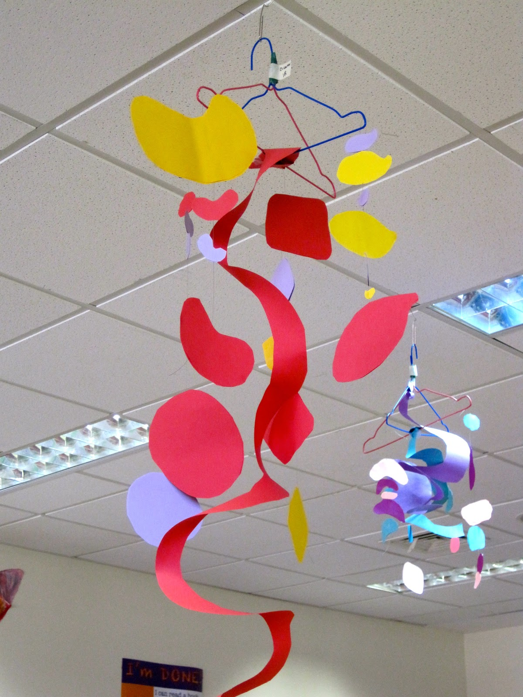

These lowkey remind me of baby cribs and the dangling toys on the top of these cribs. When I heard of kinetic sculptures, this was the first thing that came to my mind (maybe I grew up with them as a baby?)
To get the strip of paper, I cut out a circle using paper and cut that in circular motions to get a linear strip. I then tied that paper to the motor using string. That way, when the motor rotated, the paper would also rotate!
const int A1A = 3; // define pin 3 for A-1A (PWM Speed)
const int A1B = 4; // define pin 4 for A-1B (direction)
void setup() {
pinMode(A1A, OUTPUT); // specify these pins as outputs
pinMode(A1B, OUTPUT);
}
void loop() {
motorA(LOW, 255); // turn motor CW at full speed
}
// This is a custom function to drive Motor A
// inputs: direction (HIGH/LOW), speed (0-255)
// outputs: motor control
void motorA(byte d, int s) {
if(d == 1){
analogWrite(A1A, 255-s);
digitalWrite(A1B, HIGH);
} else if (d == 0){
analogWrite(A1A, s);
digitalWrite(A1B, LOW);
}
}